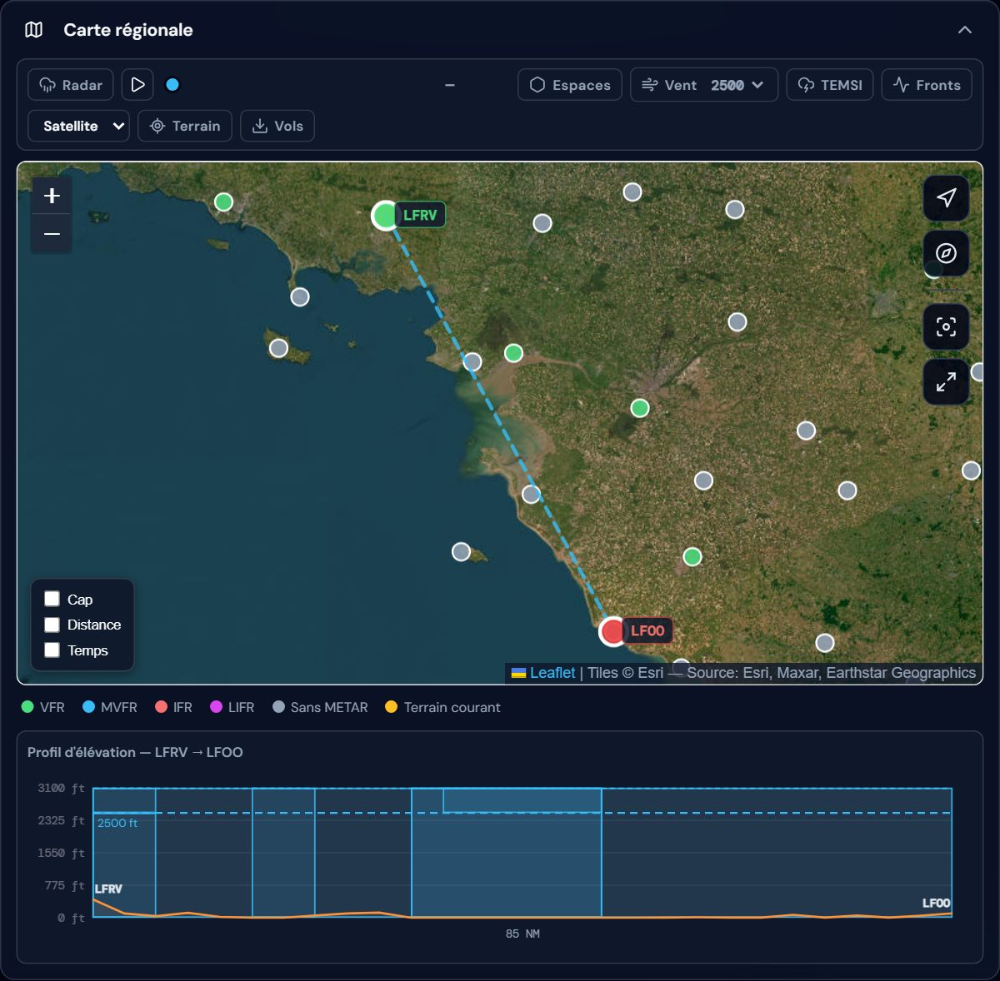
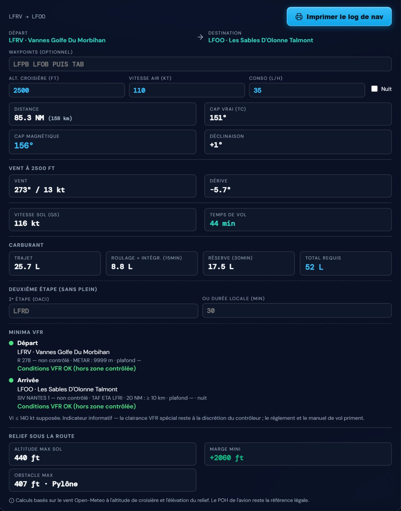
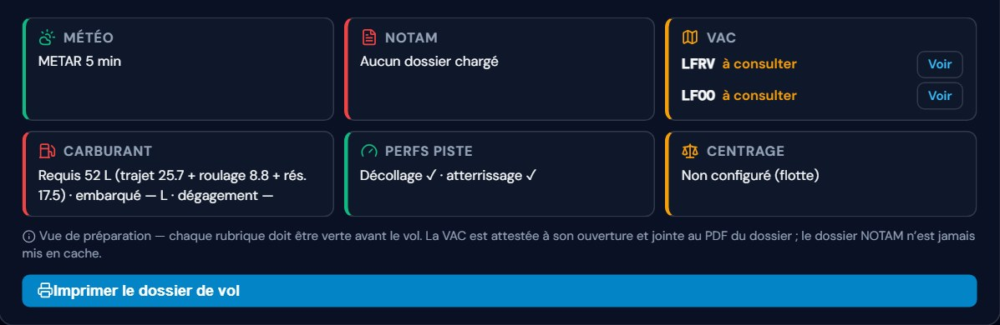
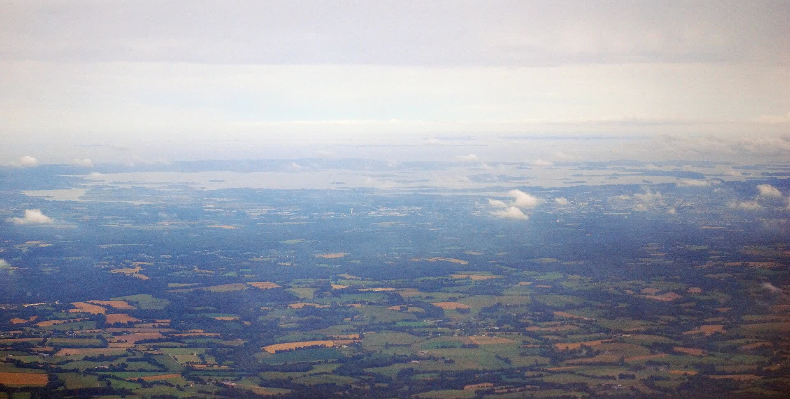

Météo décryptée à la minute, carte régionale aux pastilles colorées par la météo du moment (code VFR), planification et carburant, dossier imprimable, sur PC comme sur téléphone.



Chaque information vient d'une source officielle ; mais rien ne remplace votre jugement de commandant de bord.
METAR et TAF en clair à la minute près : vent, visibilité, plafond, phénomènes. Catégorie de vol par terrain, alertes de tendance, fenêtre de vol jour VFR, givrage carburateur et verdict GO/NO-GO argumenté.
Pastilles VFR des terrains voisins, espaces aériens SIA (CTR, TMA, zones R·P·D), radar de précipitations animé, relief et obstacles sur la route, étiquettes de tronçons cap / distance / temps.
TEMSI et vents en altitude, cartes des fronts et isobares — vignettes datées en UTC et heure locale, échéance la plus proche de l'arrivée mise en avant, consultables hors ligne après le premier chargement.
Plan multi-étapes avec insertion au plus court, log de nav A5 imprimable, devis carburant complet (roulage, intégration, dégagement, réserve, deux étapes sans plein) et minima VFR réglementaires par terrain.
NOTAM (SOFIA) sur la route, Suppléments AIP, cartes VAC intégrées et carte de vol imprimable — assemblés en un PDF prêt à emporter, avec page de garde et vérifications à compléter à la main.
Distances de décollage et d'atterrissage corrigées (densité-altitude, vent, revêtement, masse, pente) avec verdict à quatre niveaux dont « piste limitative », schémas en coupe et centrogramme par avion.

De l'idée du vol au PDF dans la poche.
Saisissez son code OACI ou son nom — la météo du jour s'affiche, décryptée.
Départ, étapes, destination : route, carburant, NOTAM et minima suivent.
Log de nav A5, météo, cartes VAC et carte de vol — un PDF complet à emporter.
Aucune inscription, aucune installation — ça tourne dans le navigateur.
Ouvrir l'application